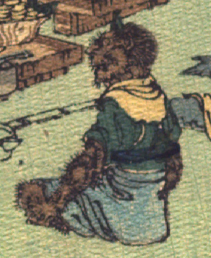

茶色の肌の鬼。額に角を生やしている。眉毛が逆立ち、頬とあごに薄くひげを生やしている。緑色の上着に青色の袴を身に着け、黄色の肩布を巻いて、座っている。腕と脚に毛が生えている。
出典：親書誌：U426_nichibunken_0113：Les Ogres d'Oyeyama／日付：2006／資源識別子：U426_nichibunken_0113_0004_0010
Copyright (c)2010- International Research Center for Japanese Studies, Kyoto, Japan. All rights reserved.